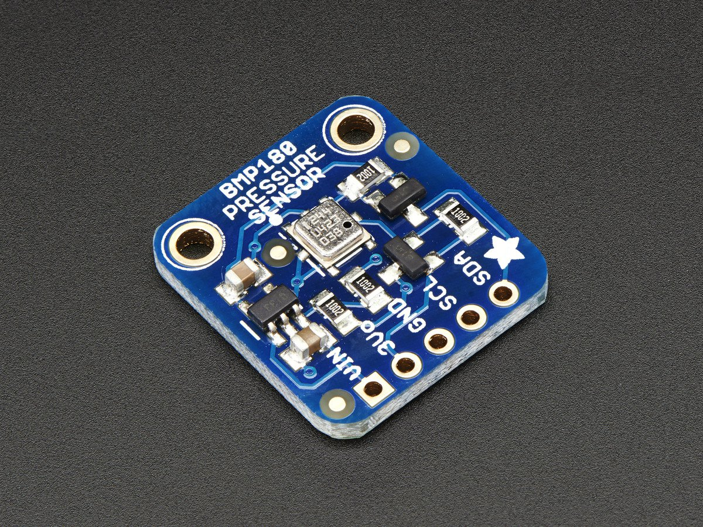

BMP180 is one of sensor of BMP XXX series. They are all designed to measure Barometric Pressure or Atmospheric pressure. BMP180 is a high precision sensor designed for consumer applications. Barometric Pressure is nothing but weight of air applied on everything. The air has weight and wherever there is air its pressure is felt. BMP180 sensor senses that pressure and provides that information in digital output. Also the temperature affects the pressure and so we need temperature compensated pressure reading. To compensate, the BM180 also has good temperature sensor.
